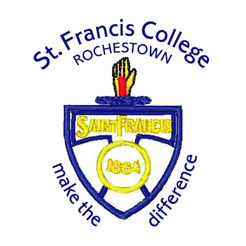

My Experience In Rochestown College
I spent six years of my life in Rochestown College from 2010-2017. In my time here I made lots of friends and accomplished a lot along the way. One of my proudest achievments was playing in the Corn Ui Mhuiri and winning the Simcox Cup. My experience in Rochestown College is something that will stay with me forever.